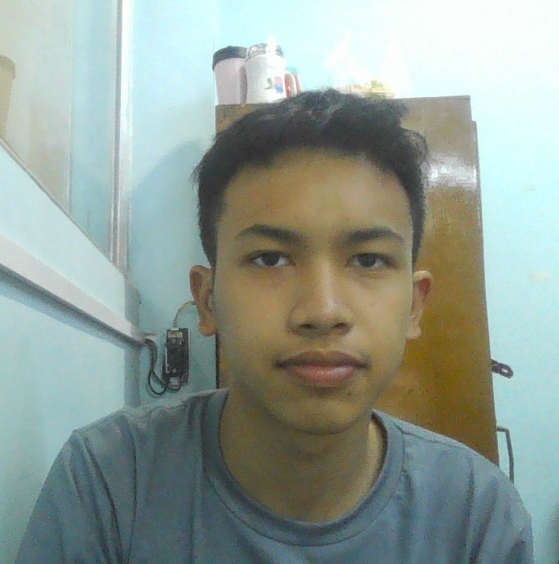

A music festival is a community event oriented towards live performances of singing and instrument playing that is often presented with a theme such as musical genre (e.g., blues, folk, jazz, classical music), nationality, locality of musicians, or holiday.
They are commonly held outdoors, with tents or roofed temporary stages for the performers. Often music festivals host other attractions such as food and merchandise vending, dance, crafts, performance art, and social or cultural activities. At music festivals associated with charitable causes, there may be information about social or political issues. Many festivals are annual, or repeat at some other interval. Some, including many rock festivals, are held only once.
Some festivals are organized as for-profit concerts and others are benefits for a specific charitable cause.[1] Another type of music festival is the educative type, organized annually in local communities, regionally, or nationally, for the benefit of amateur musicians of all ages and grades of achievement.
About NCC Music Festivals company
NCC music festivals company(NMFC) was an organization to hold and organize festivals worldwide. With a target audience that includes all those who produce and support quality celebrations for the benefit of their respective "communities," the NMFC's primary focus is identifying and providing access to the professional resources and networks that will inspire and enable those in our industry to realize their dreams, build community and sustain success through celebration. It was established in 2003, and headquartered in Newquay, UK with founder and owner professor Daniels Sam. Later, it was headquartered in Bristol, UK, where it was registered as a Section 7/1-2 non-profit organization. It was the member of the U.K Music Council.
The main role of NMFC was to provide coordination of festivals and other cultural events through arranging their dates and publicizing them through the International English Monthly Bulletins, which were distributed among the members.
FIDOF had 500 individual members and more than 1,200 affiliated organizations. It was also associated with 360 festivals held in 74 countries.
Our Founder and Owner

This is our founder and owner Professor Daniels Sam.